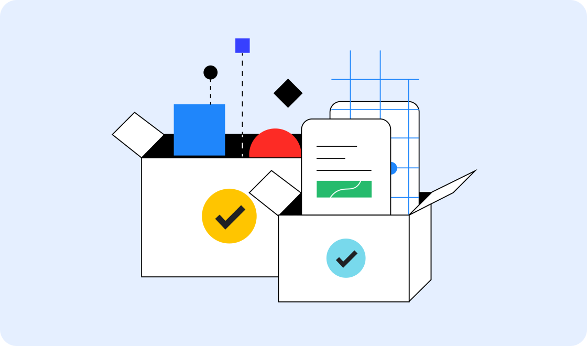

Building a better web, together
We want to help you build beautiful, accessible, fast, and secure websites that work cross-browser, and for all of your users. This site is our home for content to help you on that journey, written by members of the Chrome team, and external experts who specialize in web development topics such as accessibility, performance, design, and more.
